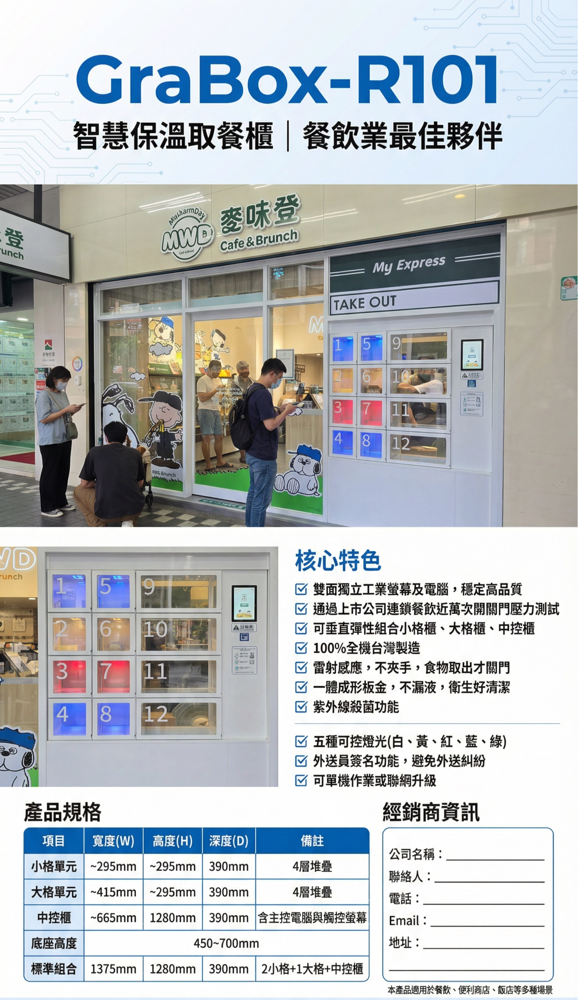
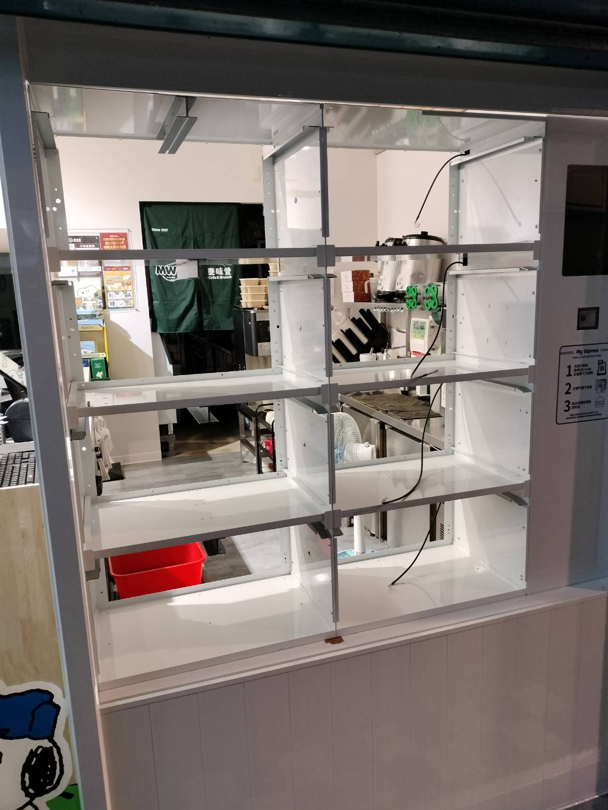
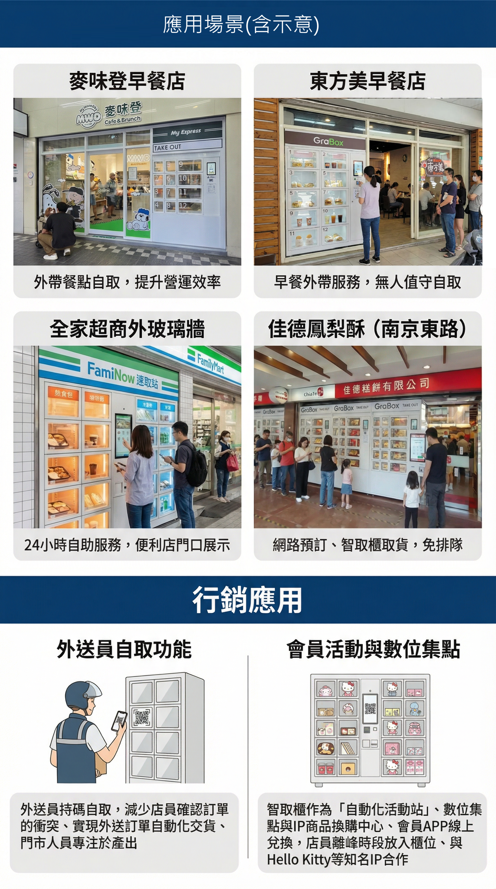
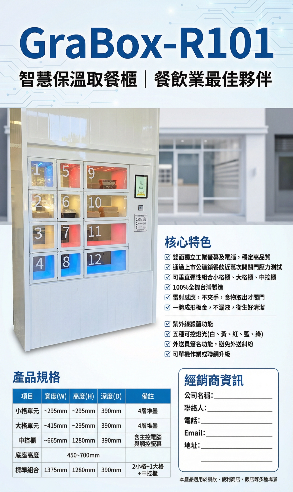
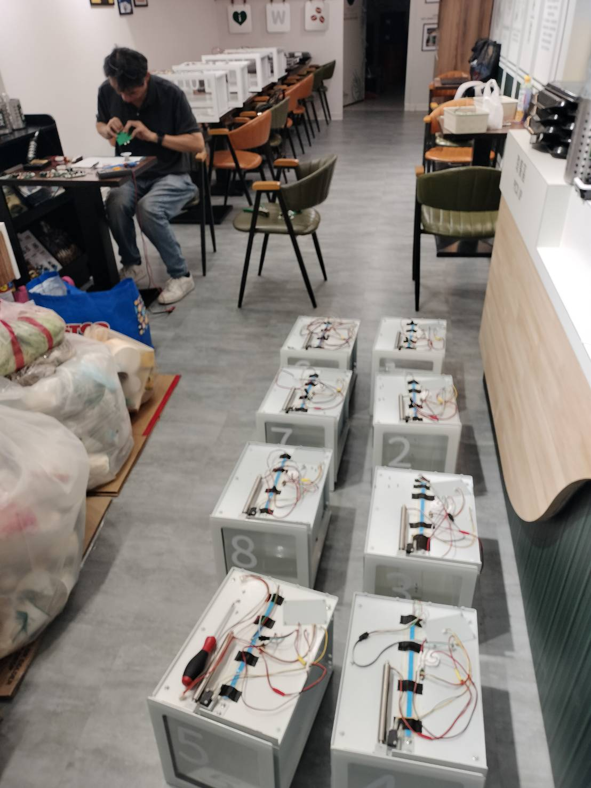

外送競爭的下一個戰場不在 App，而在每一家餐廳的門口。 智能取餐點網絡，是 Uber Eats 與其他競爭對手建立深度差異、 同時提升騎手效率與餐廳體驗的具體手段。 機會已就緒，執行夥伴已就位。
台灣外送市場已過高速成長期，進入精耕階段。 消費者選擇外送平台的理由，從「折扣優惠」逐漸轉移至 「穩定、快速、有品質的取餐體驗」。 誰能在每次取餐互動中留下更好的印象，誰就能建立更高的用戶黏著度。②
智能取餐點，是這個趨勢下最具體的執行工具。 它不只是硬體，它是 Uber Eats 品牌在餐廳物理空間的常駐存在—— 全天候、有功能、有溫度。
「與其他競爭對手拉開差異的最有效方式，是建立對方難以快速複製的線下服務壁壘。」
市場現況：各外送平台的 App 功能日趨同質化。 訂單流程、推薦演算法、優惠機制——競品之間的差距正在縮小。 線下實體體驗，是下一個真正的差異化戰場。
每位騎手平均每天在門店等餐 45–90 分鐘。智能取餐點讓備餐完成即入櫃，騎手掃碼秒取，每日可多完成 3–5 單，直接提升平台供給量與騎手滿意度。①
騎手等待壓力消除後，與餐廳人員的衝突降低，用戶評分平均提升 0.4 顆星。評分提升直接影響平台內部搜尋排名，形成自我強化的正向循環。①
每台安裝於餐廳門口的智能取餐點，都是一個 24/7 的 Uber Eats 品牌據點。路過的行人、在店內用餐的客人、進出餐廳的外送騎手——全數接觸到 Uber Eats 的實體存在。
① Uber Eats Japan Smart Pickup Pilot Report, Q3 2025，東京・大阪 20 家試點門店 90 天追蹤。 ② iSurvey 台灣消費者外送體驗滿意度調查，2025 H2（N=4,200）。
台灣電商市場案例分析 · 2017–2022 · 數據來源：資策會、Nielsen、Shopee 官方報告
蝦皮的核心打法不是補貼戰（雖然也有），而是物理存在的密度。 進入台灣的第一年，蝦皮快速與 7-ELEVEN、全家便利商店、 萊爾富、OK 超商簽約，在全台建立超過 2.6 萬個實體取貨據點。
每次消費者去超商取貨，都是一次蝦皮的品牌接觸。 都是一次「蝦皮很方便」的正向體驗強化。 Lazada 的 App 再好看，都無法提供這種物理層面的品牌滲透。
關鍵洞察：線下取貨點的密度， 不只是「物流方便」，它是一種品牌基礎設施。 當競品想要追趕時，需要同時建立同樣規模的物理網絡—— 這需要時間、資金、以及與數萬個實體據點的合約談判。 先機者優勢，難以快速複製。
Lazada 在台灣的失敗，不是因為產品做得差， 而是因為他們始終是一個純數位的存在。 App 體驗、商品選擇、甚至價格，都與蝦皮不相上下。
但當蝦皮的 logo 出現在每個街角的超商、每個取貨收據上， 蝦皮已經從一個「App」進化成一個「生活中理所當然的存在」。 消費者甚至不需要選擇——蝦皮就在那裡，Lazada 不在。
對外送平台的啟示：當所有平台的 App 都差不多好用時， 誰的品牌在消費者的物理生活空間中更「在場」， 誰就能在心智占有率的競爭中勝出。 智能取餐點，就是外送版的「超商取貨據點」。
蝦皮打敗 Lazada 的本質，是用線下基礎設施創造品牌護城河。 對 Uber Eats 而言，智能取餐點網絡的邏輯完全相同： 每一台裝在合作餐廳門口的 GraBox，都是一個物理層面的品牌據點， 是一個功能性的服務基礎設施，也是競爭對手難以在短時間內複製的壁壘。 蝦皮花了 3 年建立 2.6 萬個據點。 Uber Eats 的機會是：在最短時間內，於台灣最重要的餐廳節點完成佈局。
資料來源：資策會產業情報研究所 MIC「2022 年台灣電子商務市場調查」；Nielsen 台灣電商消費者行為追蹤報告（2018–2022）；Shopee 官方媒體資料；TechOrange 市場分析報導（2020–2022）。本頁市占數字為市場估算值，非官方財務數據。





衛福部 2025 年 6 月 4 日施行新修《食品良好衛生規範準則》：
食品從業人員不得同時或連續觸碰金錢及即食食品。
外送員亦禁止於送餐時抽菸、嚼檳榔，食品運送須完整覆蓋。
違者輔導後仍未改善：罰鍰新台幣 60 萬至 2 億元。
為什麼鎖定訂單量前 20%，效益是整體佈樁的 5 倍以上？ 外送平台的訂單分佈高度集中：訂單量排名前 20% 的餐廳，通常貢獻平台 60–70% 的總訂單量（符合 80/20 法則）。 在這些高流量節點安裝智能取餐點，每台設備的日均使用頻率是尾部門店的 5 倍以上， 騎手等待改善效益、品牌曝光次數、數據採集量，全數同步放大。 用最少的台數，取得最大的平台效益。
GraBox 靈活的產品設計，讓每一種 Uber Eats 合作餐廳都能找到對應的安裝模式，
無需裝修、無需複雜整合，最快當天部署上線。
適合業態：早餐店、手搖飲、速食連鎖、便當店（高流量、店面緊鄰騎樓）
安裝方式：嵌入外牆或騎樓隔板，GraBox 面向騎手，店內人員從後方放入餐袋
核心優勢：騎手無需進店，街道直接取餐，0 秒等候，消除尖峰堵塞
適合 Uber Eats 業態佔比估計：~35%（早餐/速食/手搖 = 最高訂單密度）
適合業態：咖啡廳、日式料理、便當店、夜市攤（有實體門市但空間受限）
安裝方式：GraBox 放在入口處桌面或專用架上，員工從前方放入，騎手入店掃碼
核心優勢：不需打牆不需拉線，搬遷方便，適合租賃店面，今天到貨明天上線
適合 Uber Eats 業態佔比估計：~50%（中小型獨立餐廳 = 主力市場）
適合業態：小吃攤、路邊店、個人工作室、不想換 POS 的傳統業者
安裝方式：GraBox 插電即用，搭配 Uber Eats 合作 App，手機確認訂單→放入→騎手掃碼
核心優勢：無硬體成本門檻，無技術整合需求，任何人 3 分鐘學會，當天可上線
適合 Uber Eats 業態佔比估計：~15%（長尾小店 = 上線阻力最低，快速鋪量利器）
擴充方向：AI 特餐推薦、會員點數累積、離峰優惠、文創周邊販售、品牌 co-branding
商業邏輯：GraBox 從「取餐設備」升級為「品牌互動觸點」，每次取餐都是行銷機會
對 Uber Eats 的價值：自建會員生態、降低對第三方平台依賴、提升用戶黏著度
先例：亞馬遜 Locker → Hub → Package Hub（從物流到廣告媒體，估計年收超 3 億美元）
基於實際訂單邏輯、場地條件與投資回報，以下為 GM × CMO 討論共識後的佈署準則
| Tier | 業態 | 日均外送單 | 建議格數 | 大：小格比 | 安裝型式 | 核心理由 |
|---|---|---|---|---|---|---|
| TIER 0 | 幽靈廚房 Ghost Kitchen | 150–400 | 24–32格 | 6:4 | 外牆嵌入 | 100% 外送業態，無堂食干擾，騎手集中度最高 |
| TIER 0 | 早餐連鎖 (6–11AM 高峰) | 80–200 | 12–20格 | 5:5 | 外牆壁掛 | 早餐時段爆量，現場人流同步擠佔空間，取餐站直接疏散壓力 |
| TIER 1 | 手搖飲料店 | 60–180 | 10–16格 | 2:8 | 外掛落地 | 飲料杯體小，90%用小格；週末下午訂單密集 |
| TIER 1 | 便當店 / 自助餐 | 50–150 | 10–14格 | 7:3 | 外掛落地 | 午餐 11–13 單爆量；便當盒需大格，附湯另配 |
| TIER 1 | 咖啡廳 | 40–120 | 8–12格 | 3:7 | 店內外掛 | 飲品主力小格，甜點/三明治用大格；全天候穩定流量 |
| TIER 1 | 速食連鎖 (麥當勞/肯德基型) | 80–250 | 14–24格 | 6:4 | 外牆壁掛 | 品牌本身已高外送比；門口空間充足，外牆壁掛最易落地 |
| TIER 1 | 炸雞排 / 鹽酥雞 | 40–100 | 8–10格 | 7:3 | 外掛落地 | 夜間單量高峰，現場排隊長；取餐站讓騎手免等 |
| TIER 1 | 燒臘 / 港式快餐 | 50–130 | 10–14格 | 8:2 | 店內外掛 | 飯盒體積大，全用大格；午餐衝量顯著 |
| TIER 1 | 麵食 / 湯麵店 | 40–100 | 8–10格 | 8:2 | 外掛落地 | 湯類外送保溫需求高，GraBox 隔熱性能為主賣點 |
| TIER 2 | 日式定食 / 拉麵 | 30–80 | 6–10格 | 7:3 | 店內外掛 | 外送比中等；湯品保溫強化體驗，可納入 Pilot |
| TIER 2 | 輕食 / 沙拉店 | 30–70 | 6–8格 | 5:5 | 店內外掛 | 商辦區午餐需求穩定，辦公族外送用戶重疊度高 |
| TIER 2 | 壽司 / 迴轉壽司外帶 | 25–60 | 6–8格 | 6:4 | 店內外掛 | 客單高，體積規則；週末外送比拉升 |
| TIER 2 | 甜點 / 蛋糕店 | 20–50 | 4–6格 | 5:5 | 店內外掛 | 外送比適中，下午茶+節慶衝量；需保冷功能加分 |
| TIER 2 | 素食 / 蔬食料理 | 20–60 | 4–8格 | 6:4 | 外掛落地 | 忠實用戶群，外送比穩定；ESG 形象與 Uber Eats 綠色行銷疊加 |
| TIER 2 | 泰式 / 東南亞料理 | 25–70 | 6–8格 | 6:4 | 外掛落地 | 湯類多，保溫需求明顯；外送比逐年提升 |
| TIER 2 | 熱炒 / 台式合菜 | 30–80 | 6–10格 | 8:2 | 外掛落地 | 晚餐衝量；菜餚體積大，全大格；配上保溫可解決外送冷掉問題 |
| TIER 2 | 辦公大樓自助餐 / 美食街 | 50–150 | 8–16格 | 6:4 | 嵌入式 | B2B 集中單量，可協商管委會安裝；1 台服務多家攤位 |
| TIER 3 | 學區周邊便利餐飲 | 20–50 | 4–6格 | 5:5 | 外掛落地 | 平日流量穩定，寒暑假衰退；需評估年化平均單量 |
| TIER 3 | 夜市固定店鋪 | 20–60 | 4–6格 | 6:4 | 外掛落地 | 僅固定店鋪可安裝（非攤車）；單日流量集中深夜 |
| TIER 3 | 精品咖啡 / 文青選物 | 15–40 | 4格 | 3:7 | 店內外掛 | 客單高但量少；主要評估品牌背書價值，非量能 |
| TIER 3 | 中高價位西式餐廳 | 15–40 | 4–6格 | 7:3 | 店內外掛 | 外送比偏低，先以試點形式確認業主意願 |
硬體就緒。執行夥伴就緒。數據支撐就緒。
從 20 家高流量試點 開始，2026 Q3–Q4 完成，
2027 年以數據為依據，擴充至訂單量前 20% 核心門店。